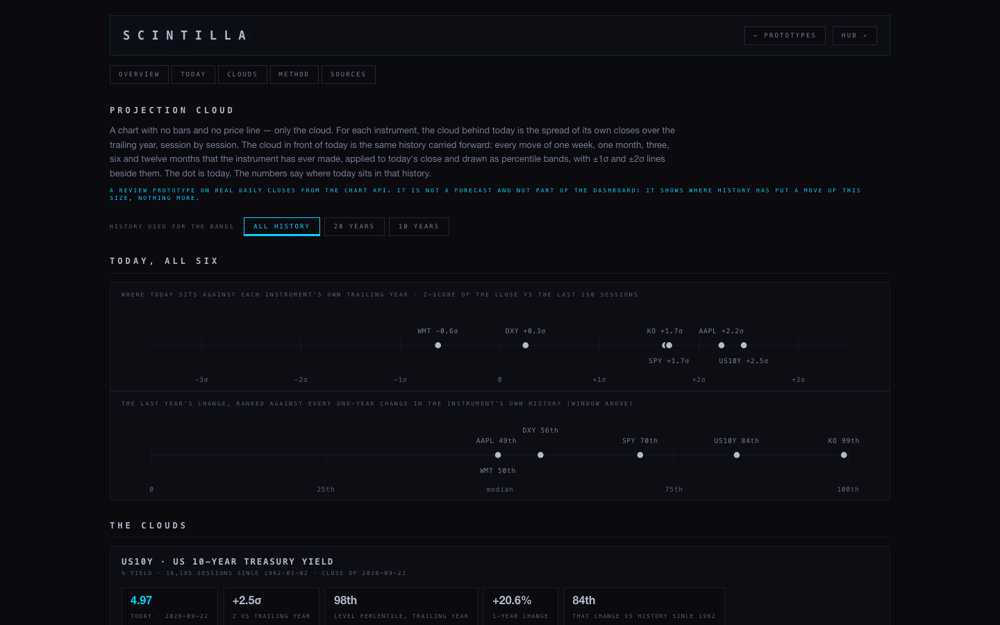
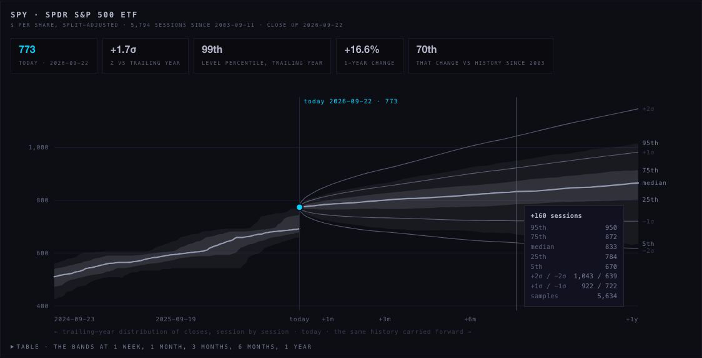
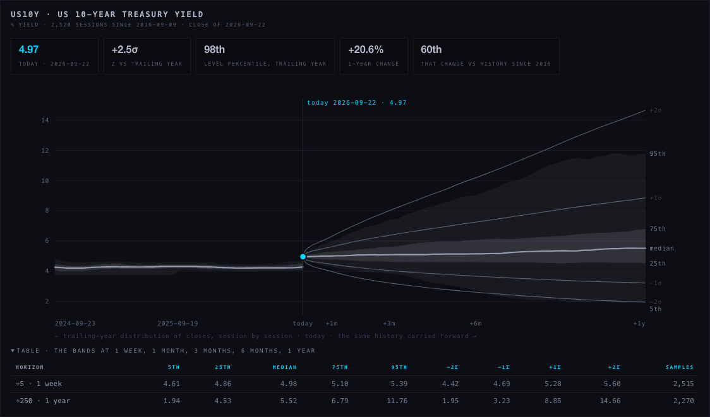
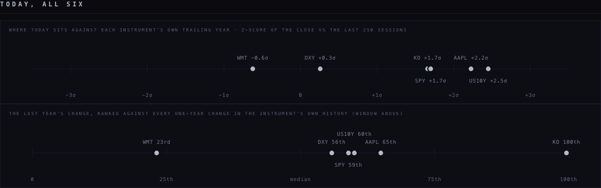
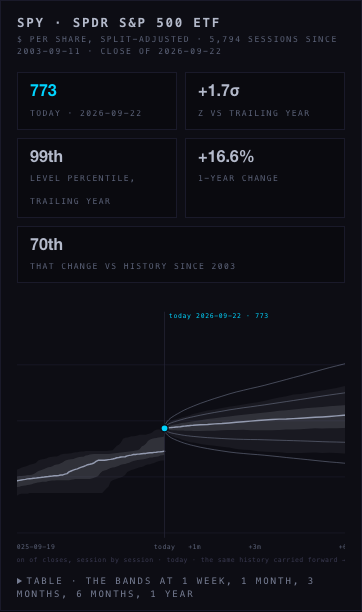
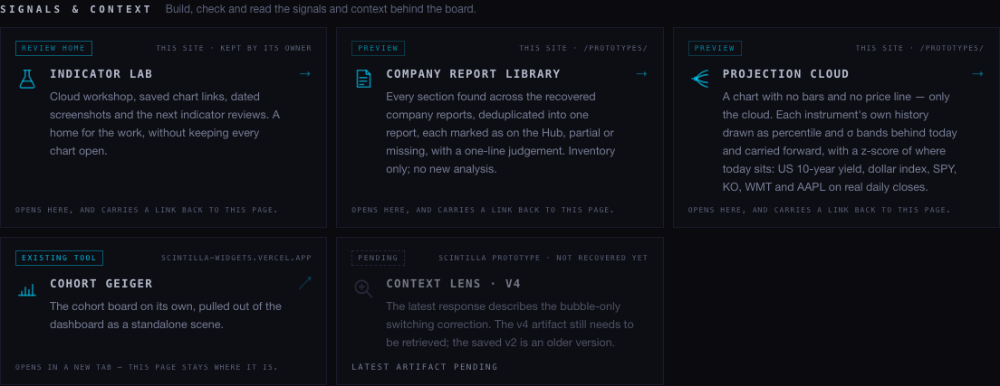
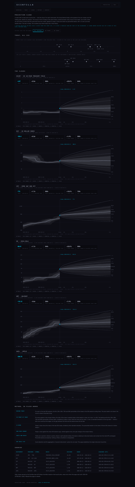

Projection cloud — what was built and what the browser showed
Deliverable · 2026-09-23 · real-browser screenshots from the candidate branch, each looked at before this page was written
The prototype lives at /prototypes/projection-cloud/ on the Hub branch and is listed on the Prototypes home under Signals & context. It is a self-contained page: the statistics were computed from the chart API's daily closes when the page was built and embedded with provenance, so opening it makes no request. Every screenshot below was taken headless with the request log empty, no page errors, and no horizontal overflow at 1440 px or 390 px.
- Six instruments in the brief's order: US 10-year yield (16,195 sessions from 1962-01-02), dollar index (14,282 from 1971-01-04), SPY, KO, WMT, AAPL (5,794 each from 2003-09-11). Closes of 2026-09-22.
- No bars, no price line. Behind today: the trailing-year distribution of closes, session by session, as 5–95th and 25–75th percentile clouds with the median. In front: the same history carried forward — every 1…250-session move the instrument has ever made, applied to today's close — as percentile bands with ±1σ and ±2σ lines beside them. The accent dot is today.
- Where today sits: z-score against the trailing year, level percentile in the trailing year, the one-year change and its rank against every one-year change in the chosen history. All six on one strip.
- Windows: all history, 20 years, 10 years — one filter row above everything it scopes.
- Hover crosshair with every band at that session; a table twin per instrument; method in plain words; a sources table with provider, basis, session count, range and acquisition time.
- Tests: the maths (quantile, sample σ, rank, forward bands on a known series, rolling bands, today's stats), the embedded data's shape and ordering, the deep history, the absence of any price series, the house rules (monochrome, no white, self-contained, never a dead end).







Not built: cycle detection and the aggregation of several instruments' cycles into one read — the page establishes the single-instrument cloud first and says so.